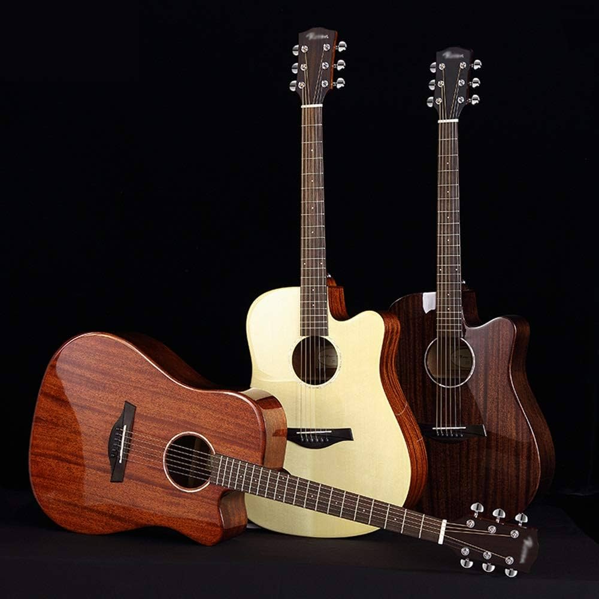

An acoustic guitar is a musical instrument in the string family. When a string is plucked, its vibration is transmitted from the bridge, resonating throughout the top of the guitar. It is also transmitted to the side and back of the instrument, resonating through the air in the body, and producing sound from the sound hole.[1] The original, general term for this stringed instrument is guitar, and the retronym 'acoustic guitar' distinguishes it from an electric guitar, which relies on electronic amplification. Typically, a guitar's body is a sound box, of which the top side serves as a sound board that enhances the vibration sounds of the strings. In standard tuning the guitar's six strings[2] are tuned (low to high) E2 A2 D3 G3 B3 E4.
Guitar strings may be plucked individually with a pick (plectrum) or fingertip, or strummed to play chords. Plucking a string causes it to vibrate at a fundamental pitch determined by the string's length, mass, and tension. (Overtones are also present, closely related to harmonics of the fundamental pitch.) The string causes the soundboard and the air enclosed by the sound box to vibrate. As these have their own resonances, they amplify some overtones more strongly than others, affecting the timbre of the resulting sound.